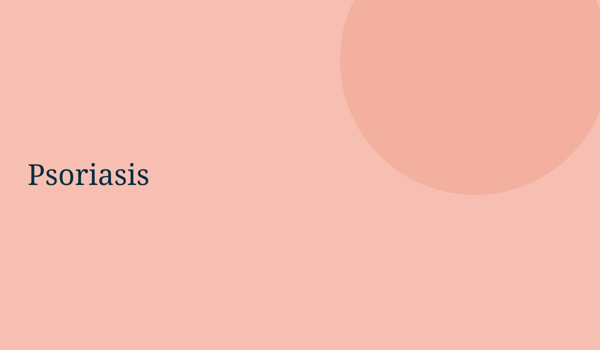

Introduction
This is the article template. Replace the prototype copy with the doctor's existing dermatologist-reviewed article content.
Understanding the Condition
Use this section for the core educational explanation, common causes, symptoms and relevant clinical context.
Key point
General educational information does not replace an individual medical consultation.
General educational information does not replace an individual medical consultation.
Management and Treatment
Add the doctor's approved information on treatment options, precautions and follow-up.
Frequently Asked Questions
When should I see a dermatologist?
Persistent, worsening or concerning symptoms should be evaluated by a qualified dermatologist.